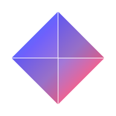

把 Labdesk 装到设备上
同一个网址 app.nzjlab.cn，Android、iPhone、Windows、Mac 都能用，数据都在实验室 Mac Mini。
iPhone / iPad 推荐
- 用 Safari 打开
https://app.nzjlab.cn（微信里打开会受限，请用 Safari）。
- 点屏幕底部的「分享」按钮，向上滑找到 「添加到主屏幕」。
- 名称保持「Labdesk」，点「添加」。
- 从桌面图标打开，输入访问码即可；语音输入会用到麦克风权限。
添加到主屏幕后是全屏运行、有独立图标，和 App 一样；不占空间、不会过期。iOS 不支持直接安装 .apk，安卓包只在安卓上用。
Android 两种方式
- App 安装包（推荐）：下载
ninglab-labdesk-debug.apk 覆盖安装，语音会走 App 自带录音，最稳。
- 浏览器安装：Chrome / Edge 打开网址 → 菜单 → 「安装应用」或「添加到主屏幕」。
下载 Android 安装包
Windows 电脑
- 用 Edge 或 Chrome 打开
https://app.nzjlab.cn，输入访问码。
- 点地址栏右侧的「安装」图标（Edge 也可能显示为「应用可用」）。
- 安装后开始菜单和桌面会有 Labdesk 图标，打开时没有地址栏。
测试电脑用它录测量记录：语音输入 → 选原始数据 → 保存并分析。
Mac
- Safari 打开网址 → 菜单「文件」→「添加到程序坞」；或 Chrome 地址栏右侧「安装」。
访问码
访问码由课题组管理员提供，所有人共用一个。忘记时可以请管理员在 Mac Mini 上重新查看；不要把访问码发到公开群里。
← 返回工作台